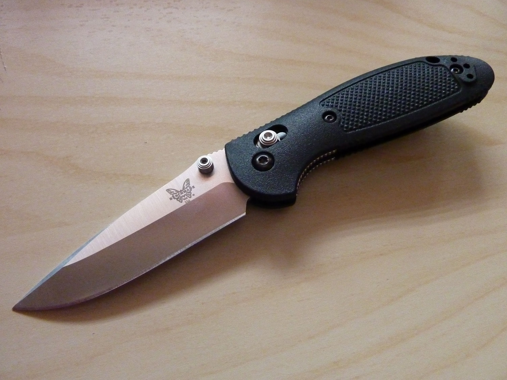

The Benchmade Griptillian is one of the most recognizable pocket knives on the market.
It was part of the modern folding pocket knife movement and is still popular today due to its unique patented locking mechanism

Blade Steel: 154CM
Blade LengthL 3.45 inches
Weight: 3.82 oz.
Handle Material: Polymer
Country of Manufacture: USA
Home Spyderco Positron Benchmade Griptillian Kershaw Launch 3